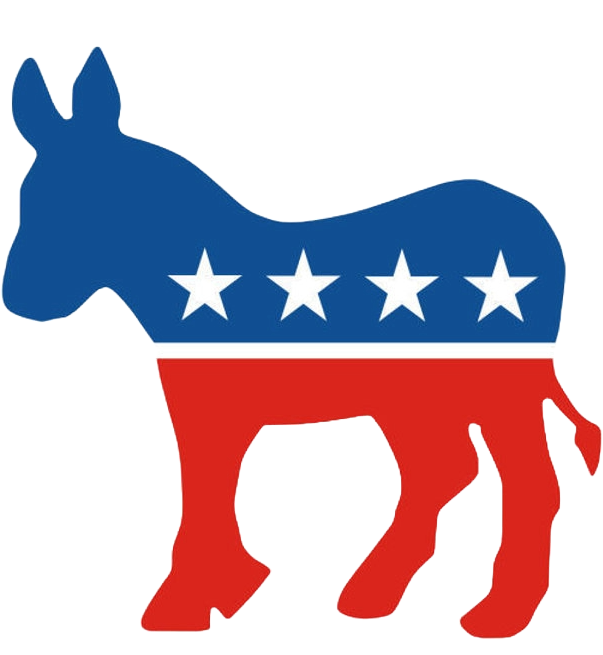
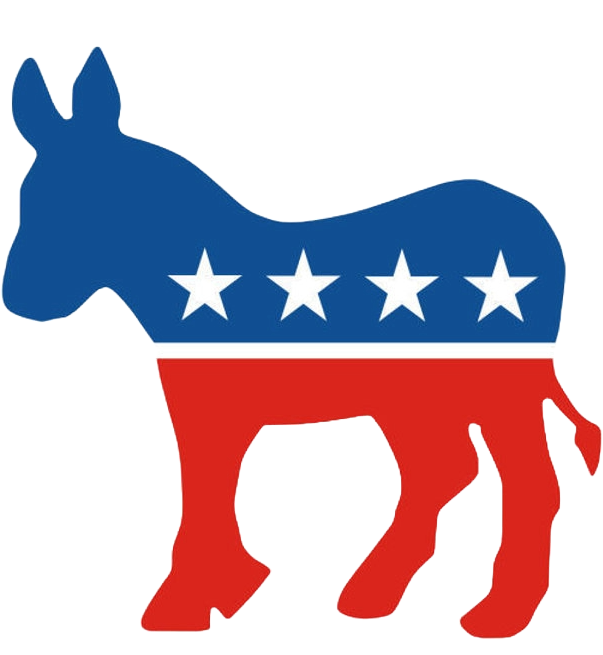
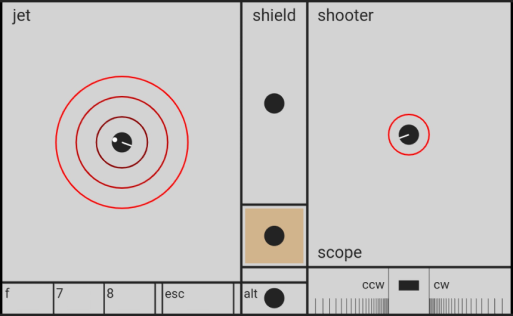

springs & pucks
(best with a Chromium-based browser)
Triquence.org is host to a collection of animations and games.
For a start, click and drag a colored circle on the canvas. Take the tour. Watch and see how to grab, fling, rotate, and shoot.
Topics here:
These animations use JavaScript, Box2dWeb, and an HTML5 Canvas. Multiplayer games use peer-to-peer Wi-Fi clients developed with socket.io and WebRTC.
The reference and revisions pages give another perspective on functionality. You may find a note on what's coming next.
Nearby, you'll find a related tutorial and some very unrelated charting.
A playful introduction:
- Move objects (pucks) with your mouse or finger. Drag and fling them. Put on the breaks with the f
key.
Try the g key.
- Click on the links in the row of letters (under the numbered buttons) to run the variations of the
base demos. For example,
click on the "5" button and then click on the "d" link to see the falling-dandelions demo.
- Button #7 starts the Puck Popper game. With multiple players, use #8 for more terrain. For more
challenge, try 8c, 8d, and 8e.
Here are a few how-to videos.
- The client
interface for multiplayer includes a virtual gamepad for cell phones (or any touch-screen device).
Try it. Click the multiplayer option (right panel) to start hosting a game.
Type in a room name (left panel), and then click the "Create" button. On your cell phone,
from the mini-client page,
enter the room name and then touch the "Connect" button.
After your connection to the host succeeds, touch the "Two-Thumbs" button.
-
Play some ghost-ball pool.
Go hunting.
Detangle the Jello: #6.
- Try an editor feature: select a puck, then resize it with the arrow keys.
- Then save your edits, capture them, by clicking the "U" button. Replay the capture by clicking the
corresponding number key or the "Run" button.
- Take a look at the list of keyboard shortcuts.
- (Note: with the "Ctrl" and "Shift" keys down, use the left/right arrow keys to step through the history of page links that have been clicked. The up-arrow key jumps to the top of the page.)
Use the number buttons (right panel) to start demos and games. Each button presents a group of similar demos. For example, the #5 group introduces springs. To restart, click again (or use the keyboard's number keys). The letter links, below the number buttons, start variations of the base demo or game. Hover over the buttons and links for info tips.
details...
Clicking one of these letter links populates the capture box and starts the variation. Clicking the corresponding number button restarts the variation. The "a" link acts to clear out the capture box and then restart the base demo. The "0" (zero) key resets the demos, clears the capture, exits from full-screen mode, and scrolls this panel to the top. Each number button auto-scrolls this left panel to show corresponding information.The scrolling in the left panel is recorded. These panel-scroll positions can be revisited using the left and right arrow keys if both the "Ctrl" and "Shift" keys are held down. Similarly, the up-arrow key scrolls this panel to the top.
The "Freeze" button momentarily stops the translation of all pucks while allowing rotation to continue. The neighboring "R" button stops the rotation of all pucks (if multi-selection is used, this applies only to the multi-selected pucks). Use t and shift-t to change the rotation rate of multi-selected pucks only.
The "Reverse" button (or Ctrl-Backspace) flips the velocity and reverses the rotation rate of each puck.
Each of the three mouse buttons has a different spring strength for dragging objects: left click for the normal spring, center click for the weakest spring, right click for the strongest spring and a firmer connection to the larger pucks.
details...
Note that using the right mouse button on the smallest pucks may cause instability in the physics engine; go ahead and try it. If you're only positioning a small puck (not flinging it), try doing so with the control key down; that will always be stable.Most controls have a keyboard shortcut letter underlined in their label.
The "COM" (Center Of Mass) checkbox controls the position of the selection point (and where the cursor spring attaches). With this on, the selection point will always be at the center of the target object. Turning this off allows you to apply an off-center force (torque) to spin or stop spinning the object.
details...
The "c" key is a keyboard shortcut for the COM checkbox. Use alt-c to center the cursor-spring attachment point along the narrowest dimension of a rectangular puck. Issuing alt-c a second time pushes the attachment point to the nearest end of the puck (these alt-c commands apply to both single and multi-select).The "g" checkbox (or "g" key) toggles gravity between 0 and 9.8.
details...
The gravity checkbox also controls several associated parameters in Box2D: restitution, friction, and b2_velocityThreshold. Depending on the demo, if gravity is turned off, these settings are used to produce more elastic collisions (low energy loss) so things keep moving and don't stick to the walls. In demo #6, the opposite is done so that collisions are inelastic, reducing chatter when pucks are held in contact with each other under the tension of springs. Note that if you use the editor to change the restitution or friction of a puck (or if the corresponding "fixed" flag has been set in the capture), it will remain fixed at that level, independent of the gravity checkbox, until the demo is reloaded or the puck is edited again. If you grab a puck with the control key down, you may see the word "fixed" after the restitution or friction values in the puck report.The "CV" checkbox put a Coronavirus costume on each of the drone pucks in the Puck Popper game, demos 7 and 8. This gives you a safe way to take a swing at this nasty little virus.
The "pause" checkbox disables all updates to the canvas. When paused, a stepper button is revealed in place of the fps value; click it to advance a single frame. If the perimeter walls are red, the animation is paused. Uncheck the "pause" control to resume animation. Alternatively use the "p" key to pause and resume. The neighboring "o" key will single step the animation. Hold the "o" key down to repeatedly step at a slow rate.
The combination of the "alt" and "p" keys toggles the canvas eraser.
details...
The eraser normally precedes each frame. When toggled off, some drawing features, such as for springs, are inhibited. This feature produces interesting variation of the demos, especially the spinning rectangles of the #4d group (turn gravity off, use the aspect_ratio full-canvas button, and then alt-p), and the expanding color tail of #2e (again, use the full-canvas button, grab the puck with the mouse, shrink it all the way down using the arrow keys, fling it hard, and then alt-p).The fullscreen full-screen button stretches the animation canvas into full-screen mode while preserving the original aspect ratio. This provides a nice front-and-center presentation of the demos (a good way to play Puck Popper).
The neighboring aspect_ratio full-canvas button enlarges the canvas to match the size and aspect ratio of the screen (view port). When using this feature, the perimeter fence is enlarged to match the dimensions of the larger canvas (note: the fence is not adjusted for the pool games).
Use either the "esc" key or the "0" key to exit from either of the full-screen views. Note that the "0" key clears the capture that is automatically taken when this button is used.
The "remove/add items" select control, provides a way to scrub off the canvas and add elements as needed. If the cursor is moved off an option and onto the canvas (before clicking it) the cursor position can be used to position the new element; after positioning the cursor, press the enter key. If the option is clicked, a default position on the canvas is used.The "align-selected" option under "remove/add items" acts to position (equally spaced) all the selected objects along a line formed by the two most separated members. It also linearizes the values of restitution, friction, and linear and angular damping based on the corresponding values of the two outer members. The keyboard shortcut is alt-L.
Similarly, the "arc-selected" option acts to position (equally spaced) the selected pucks along an arc (a semi-circle). The ordering of placement is in the same order as individual pucks are selected. So, for a trick-shot rack in a game of 9-ball, select the 1 ball first and the 9 ball last. This sets up a potential chain reaction of collisions, sending the 9-ball into a pocket. The keyboard shortcut is alt-shift-L.
Use the "Multiplayer" checkbox to display the controls for connecting as a host to the node server. Then type a short room name into the red input box (on the left). Optionally, type a nickname for yourself into the chat input box. Then click the "create" button. Wait a few seconds for the server to wake up. Open one (or several) client windows from these links: window, tab. From those client pages, repeat the connection process using the same room name that you specified as the host. Once connected, you will see your mouse and keyboard events rendering to the host canvas (this page). That way multiple users can simultaneously interact with the animated objects in the demo. The question-mark key can be useful for locating your puck in the Puck Popper game (demos 7 and 8). There's more info on the specifics of multiplayer game play in the topics for demos #7 and #8 below.
Optionally, each connected client may initiate a live video stream of the host's canvas. After connecting, click the "Stream" checkbox on the client. This works best if the host and the clients are running their monitors at the same refresh rate. Overall, Chrome is the best browser for producing smooth rendering of the stream on the client. If the client has limited cpu power (like a Raspberry Pi), it's best not to stream. Any client without a video stream has to be in the same physical room to see the rendering on the host's screen.
The Two-Thumbs touch screen interface, a virtual gamepad (see image below), is useful for controlling a game puck from a cell phone in demos 7 and 8 (Puck Popper). From your cell phone, or other touch-screen device, open the mini-client page in Chrome (or the full client). Connect to the host as described above, then click the "Two Thumbs" button. Your left thumb will control the jet direction and intensity (more thrust the farther your touch point is out from center dot). Right thumb fires and aims the shooter. The center rectangle turns the shield on/off.

The colored rectangle, below the shield control, indicates your client color. Touch it, and a large circle will show around your puck (helping you to find it). The small rectangle controls at the bottom require the alt rectangle to be touched first (this prevents accidental firing of these controls when driving the puck). These can be used to: get out of the full-screen mode (esc), freeze the object motion (f), restart the two Puck Popper games (7 and 8). The scope control is located in the bottom right corner of the virtual gamepad. This control precisely rotates the shooter tube and shoots from a fixed position. Touching the center block stops the movement of your puck, and then shoots without recoil (and no rotation). The surrounding two blocks, rotate the shooter tube (ccw or cw). The rotation rate is reduced as the touch point approaches the center block.
Note that you can use the Two-Thumbs interface, even when there is no direct line of sight to the host's screen, by starting up a second client with a video stream.
As described above, the full-screen buttons provide means for presenting the canvas without the help/chat and the controls panels (nice for playing Puck Popper).
There is more information on the Node.js, socket.io, and WebRTC that are used here, including instructions on how to install a local node server on the host computer.
The capture, "U" button (or "u" key), records the current state of a demo. The result is written to the neighboring text cell and also to the paste buffer. The capture can be started with the "Run" button (or shift-r from keyboard) or the corresponding number button (highlighted yellow). Restart with "Run" or the yellow demo button.
After capturing, the results can be saved for later use by pasting into a text file. To reanimate the capture, paste the result back into the capture text area and click the "Run" button or the corresponding demo button. The capture result is in formatted JSON. Code editors work well to view and edit the capture with syntax highlighting (JavaScript).
A capture can be immediately taken after starting a demo (before the engine alters the state) by clicking the "Run" button while holding the shift key down. This can be used to get an updated copy of an existing capture. This is also a good way to take an un-altered (0th frame) capture of the "a" versions of the demos.
There are links to color-highlighted examples of JSON captures in the help topic for demo #6. These were taken following use of the editing features (see below) to make two circular structures from the Jello matrix.
Captures can be edited. To try it, first, to better view the capture, right-click in the capture text area (or drag out the lower right corner). Run the 2c demo, and then change one of the pucks so that its tail's rainbow parameter is set to "true". Then start it with the "Run" or #2 buttons.
The "S" and "L" buttons Save and Load captures through your local file system. The "P" button posts the current capture to Cloud storage; hold the shift key down to update an existing Cloud capture; hold the shift and ctrl keys down to delete an existing Cloud capture. The "?" button lists captures available from Cloud storage (a subset for the current demo index); hold shift key down to list all Cloud captures. Click the links in the list to download and run the capture. Anonymous cloud posts (using the default nickname of "host") expire (self delete) in 3 days.
The "remove/add items" select control has three procedures for making changes to an existing capture: "shift capture," "modify capture," and "sort capture." For each of these, you'll need to start with a capture in the capture text area.
details...
- The "shift capture" procedure moves all the elements in a small-canvas capture to the center of a larger canvas. Click on this option, then "Run" the resulting modified capture.
- The "modify capture" procedure operates on selected elements, editing the capture based on a substitution string in the chat field. For example, starting with a capture of demo 1, put {"color": "brown"} in the chat field (use the "m" key if chat is hidden), select a few pucks, click this option (or shift-m shortcut). The modified capture will automatically run.
- The "sort capture" procedure sorts the pucks in the capture and renames pucks, springs, and
joints with an increasing index.
This provides a nomenclature cleanup, indexes starting at #1 and consecutive.
Here are examples of parameters for the chat-field:
- {} An empty pair of braces, indicating defaults, is equivalent to {"sort":"old-name", "offCanvas":"nodelete"}
- {"sort":"area"} Sort the pucks by increasing area.
- {"sort":"position"} Sort the pucks by increasing x position.
- {"sort":"old-name"} Sort the pucks by old-name index.
- {"offCanvas":"delete"} Delete off-canvas pucks.
- {"sort":"area", "offCanvas":"delete"} This does both.
Editing features can be used to change the characteristics of selected pucks, pins, walls, or springs.
Select a single object by clicking in the canvas area and then dragging the cursor over the object (or by directly clicking on the object).
Note: If a key combination seems unresponsive (for example, ctrl-shift-L or alt-r), see the “GPU utilities” note on the Mice, Keys, and Touch page.
Summary of the single-select commands:- "c" key:
- cursor-spring-attachment mode: use the "c" key to toggle between center-of-mass (COM) and a specific point on the selected puck.
- aim an arrow: use "alt-c" to center the attachment point in the narrowest dimension of a rectangular puck. This is useful for shooting a skinny one.
- control key:
- mouse drag: hold the "ctrl" key down and mouse drag the object. Puck position and other characteristics are displayed in this mode.
- rotation: hold down the "ctrl" and "Shift" keys and drag the object using the mouse. For circular pucks, you'll see a ghost (outline) as you drag to rotate the source puck.
- shoot a puck: the rotation move (above) leads to a billiards shot by releasing the mouse button. For more on this, try demo 3d, the Ghost-Ball Pool game. Note that the game has the "ctrl" and "Shift" keys locked down; ctrl-Shift-L toggles this lock. Use the "alt" key to reverse the direction of a shot.
- arrow keys: resize a single object
- up/down keys: change a rectangular object's height
- left/right keys: change a rectangular object's width
- "-" and "+" keys: change the surface friction (tackiness)
- "[" and "]" keys: change the puck's restitution (elasticity)
- "<" and ">" keys: change the linear damping (drag). Use while holding down the "alt" key to change a puck's rotational damping.
- ctrl-v: replicate the object (includes navigation pins) near the original
- ctrl-x: delete
To repeat the resizing operations keep holding the corresponding key down.
By default, walls and pins (stationary spring anchors), are not selectable unless you check the "Edit walls & pins" box. This default protects them from moving around under normal mouse-drag situations. To mouse-drag walls and pins, you must also hold down the "ctrl" key.
Check the "Edit walls & pins" box to change the characteristics of the static terrain for any of the demos. This includes perimeter and interior walls (even rotating ones). Refer to the next section, on Multi-select, for commands to rotate objects.
Demo #8 was constructed using the editing features and the state-capture feature. Modify demo #8 to create your own battle field: edit, then capture it.
Multi-select allows you to select single or multiple objects. This is the only method by which springs can be selected (by selecting their connected pucks and pins).
Hold the shift key down to select multiple objects during mouse drag (turn off "Select COM" to select off-center points). Hold down the alt key for box-based selection.
Selected objects are indicated by yellow dots; springs are dashed. To unselect an object, RIGHT click and drag, still using the shift (or alt) key. Note that right clicking with shift down in FireFox yields a context menu when you release the click; ignore it, try using the alt key with FireFox, or use Chrome.
To completely reset the multi-selection, release the shift (or alt) key and click on any empty space in the canvas area.
Summary of the multi-select commands:
- control key: group drag
- hold the control key down, then click and mouse drag any body in the multi-select group causing the whole group to drag
- control and shift keys (or control and alt): group rotation
- hold both the control and shift keys down, then click and mouse drag any body in the multi-select group causing the whole group to rotate about the center of the group
- hold both the control and alt keys down to cause each body to rotate about itself
- arrow keys: resize single or multiple objects
- holding down the "s" key directs resizing (or damping) operations at selected springs. In the default mode ("s" key up), operations are directed at selected pucks and walls.
- up/down keys change the object's length
- left/right keys change the object's width (and strength if it's a spring)
- left/right keys, while holding down "s" and "alt", changes spring width without affecting spring strength
- t (and shift-t): incrementally change the rotation rate.
- r: stops puck rotation.
- "-" and "+" keys: change the surface friction (tackiness)
- "[" and "]" keys: change the restitution (elasticity)
- "<" and ">" keys: change the damping (drag) on selected pucks
- Use while holding down the "alt" key to change the rotational damping (drag) on pucks.
- Use while holding down the "s" key to change the damping characteristics (shock absorbers) of selected springs.
- ctrl-x: deletes single or multiple objects
- the first ctrl-x operation deletes the selected springs, a second ctrl-x deletes selected pucks and pins
- ctrl-c: copy a single spring (must have ONLY the two connected pucks or pins selected). Press ctrl-c a second time, with no selected pucks or pins, to stop using this spring as the source for paste operations.
- ctrl-s: paste a single spring (onto two selected pins or pucks)
- ctrl-v: replicate a selected group of objects to the cursor location. Note: client pucks and navigation pins are excluded.
Altering the characteristics of objects in a multi-select group, such as resizing, affects all members of the group. If a status message is displayed, it indicates the changing value of the last object selected in the group. All member values are scaled with the same factor (increments of 5 or 10%).
The "tab" key steps through additional features for interacting with a multiselect group:
- normal: a delete operation, ctrl-x, first targets springs and revolute joints and then (a second ctrl-x) targets pucks and walls.
- everything: first ctrl-x deletes everything highlighted in the multiselect group.
- springs: ctrl-x applies to springs on pucks/pins in the multiselect
- "enter" key steps through, and individually highlights a specific spring. "shift-enter" steps in reverse order. Copy/paste/delete/alter operations apply to that specific spring.
- revolute joints: ctrl-x applies to revolute joints on pucks/pins/walls in the
multiselect
- "enter" and "shift-enter" step through the revolute joints. Delete operations (ctrl-x) apply to the highlighted joint.
- use multi-select to select ONE spring (two pucks/pins)
- copy it (ctrl-c)
- use multi-select to select a new pair of pucks/pins (turn off "Select COM" to select off-center points)
- paste the spring (ctrl-s)
A few things to try with multi-select:
- Dissect (or add to) the jello matrix in demos #6 and #8.
- Select a compound object (like the triangle in demo #5) and change the connecting spring lengths while it's spinning.
- Delete some of the pucks in demo #3. Select and delete without using the freeze button. Notice how the new holes in the puck grid propagate after wall collisions.
Demo #1 presents several circular puck animations. The 1a version is a simple mix of large and small pucks, no gravity. These pucks have some surface friction, tackiness, affecting collision and rotational behavior. If gravity is toggled on, their tacky surface, allows these to be combined (stacked) into rolling trios. Try toggling off the "COM" (center of mass) selection and then mouse drag to apply a torque to one of these pucks. Surface friction of selected pucks can be changed via the editor (+,- keys).
1b shows the capability of Box2D in a difficult task, modeling a settled pile (i.e., stationary objects in contact, under gravity).
1b also shows that what appears to be a very random process is actually deterministic. At a 17ms timestep, a pyramid of yellow balls will form. This always happens unless there is some user interaction. If you first change to a 10ms timestep, the 10ms version will yield a similar result.
(Note: to see the deterministic behavior, the 1b demos must be done without the host connected to the node server. If the host has created a room, and a client has connected, you must reload the this page to fully disconnect the host from the node server.)
For a little side trip with 1b, try setting the surface friction to zero for all the pucks. First, edit the capture, set gravity to false. Then run the altered 1b capture by clicking the "1" button. Box select all the pucks (drag with alt key down). Then hold down the "-" key until puck friction is at zero. Deselect everything by clicking on an open spot in the canvas. Finally, toggle gravity back on ("g" key) to see the more fluid result.
1c presents an unusual method for calculating the first two digits of pi (31) using two elastically colliding pucks. Wait as the large puck is repelled by collisions with the smaller puck (and wall). The collision count will stop, eventually, as the two pucks both move in the negative y direction, the large puck slightly faster than the smaller one. This 31-count case occurs when the larger puck has 100 times the mass of the smaller. If the mass of the two pucks are changed to be equal (you can try this by editing the capture), this demo will yield the first digit of pi (3), three collisions, two kisses and one wall bounce.
This 3Blue1Brown video tells the counting-to-pi story.
More pi digits can be found in this way at higher mass ratios, where the ratio is 100 to some power of n. You'll need to use a dedicated 1D physics engine like this one written in Python. The 1D algorithm is also implemented here in demos 1d (3 digits of pi, n=2) and 1e (5 digits, n=4).
The "v max" value captures the highest velocity for the smaller puck during the pi-counting series. This peaks at the point when the larger puck has transferred all its kinetic energy to the smaller puck and reversed its direction. A closed-form solution to this can be derived by equating the kinetic-energy expressions for the two pucks. For 1e:
\[ v_{max}=\sqrt{\frac{m_{2}}{m_{1}}}v_{2}=\sqrt{100^{4}}\ast0.4=4000 \]
Demo #2 2a is a sound-field simulation where two of the pucks are emitting at 60Hz (or the refresh rate of your computer and monitor). The width of the canvas represents 6 meters. Every second a single wave is colored white (contrasting) so you can see that waves are propagating out from the puck. The propagation speed can be changed in the capture (propSpeed_ppf_px). The set of waves are stored in a FIFO buffer. The set size can be changed in the capture (length_limit). This gives the appearance of a tail as the puck is dragged. If you fling the puck so it moves faster than the wave speed (Mach > 1) you will see a shock-wave.
The 2c version of this demo illustrates object motion at Mach speeds of 1.00, 1.41, and 2.00. These speeds produce corresponding Mach angles of 90°, 45°, and 30° (view the capture).
When using the single-frame stepper, you'll see that the 'white' wave is colored red for added visibility. Pause it when the white wave is visible, then click the "step" button. Notice that the center of the red circle never moves, even if the puck is moving.
2d has one puck with a tail propagation speed of zero. This helps to show that the center of each propagation wave does not move, independent of the puck movement.
2e has a rainbow tail, as characterized in the HSL (hue, saturation, lightness) color space. Saturation and lightness percentages are editable in the capture.
Demo #3 presents examples of order and disorder and are intended for use with the "reverse" button (or Ctrl-Backspace).
3a illustrates the effect of a disorderly influence on a grid of pucks colliding with each other and the walls. Try reversing the puck motion shortly after the start of the disorder. You'll see that it doesn't take long before this becomes non-reversible. The Playing Catch video (second) in the Perfect Kiss topic, demonstrates a much more reversible puck-puck collision calculation.
3b and 3c have puck-puck collisions inhibited, leaving only wall collisions. This makes for a very reversible collision process even minutes into the demo.
If you try demo 3d you might smell the smoke and beer from your local pool hall.
Demo #3d is the 9-ball version of the Ghost-Ball Pool game (here are racks for 8-ball and simple rotation). Instructions are displayed at the start and in the outline below. Press the "v" key or click here to go full-screen (you'll see the cue ball on the right). The "esc" key returns you to normal view.
Your nickname during games and on the leaderboard:
- To aim a shot, select the cue ball with the mouse, then drag the ghost ball so as to touch it to an object ball or cushion. This will display alignment lines. After colliding, the object ball travels along the solid yellow line, cue ball along the solid white.
- Shoot the cue ball by releasing the mouse button. Shot speed is initially set at 20. Release over the cue ball to cancel the shot. Use the "alt" key to reverse the direction of the shot.
- Adjust the shooting speed by tapping the "z" key while dragging the ghost. The value is based on the separation between the ghost and the ball. Optionally, adjust with the mouse wheel.
- Move any of the balls by dragging with the "ctrl" key down, useful for setting up trick shots and ball-in-hand positioning after a foul.
- Restart the game with the "3" key.
- The "b" key disengages the ghost-ball from the target (temporarily turns off finemoves), or toggles it, on/off, in other demos.
- "alt-b" and "alt-n" step you through the shot history.
- The "m" key toggles between this help and the chat panel where the leaderboard reports are displayed.
A cell phone (touch screen), also, can be used as a client device (to aim a shot). Open the desktop client on your phone and connect as usual to the host. Then use the client's full-screen button (after which you'll get a blank gray screen). Touch and drag to aim a shot; release the touch point to shoot. Release over the cue ball to cancel the shot. Starting a second touch point adjusts the speed lock (like the "z" key described above). Triple tapping, with one finger, toggles ball-in-hand mode (so you can move any ball). Starting a fourth touch point restarts the game (four fingers).
(My dad had a good eye for the game; remembering the times we shared shooting pool in our basement.)
Demo #4 4a shows Box2D's capability for modeling the rotation and collisions of non-spherical objects. This is a good one to try the editing features. Copy one of the rectangles and then change its width and length. Make some copies of your copy.
The 4b capture (view it) looks a bit like a flying drone. Try using multi-select (alt-key and mouse drag) to select the whole system, three pucks and three springs. Then, while holding down the s key, use the up/down arrow keys to change the length of the springs. If you make them short enough, the rotors (spinning pucks) will collide. Angular momentum (L) is conserved in this collision but is transferred from the spinning form (Ls) to the orbiting form (Lo). The result: the system rotates about its center.
If you're stepping through the demos in sequence, demo 4b is the first display of the EpL & Speed reports. Notice that the angular momentum stays constant at -0.56 before and after the collision suggested in the preceding paragraph.
For an editing exercise, enable wall and pin edits (click the checkbox). On the left side of the canvas, a spring is mounted on two pins. This can be used to produce a copy (shift key, then mouse-drag over the pins, then ctrl-c) and paste it onto one of the pins and one of the rotors (with the shift key down, mouse-drag over these objects, then ctrl-s).
The "Freeze" (stop translation) and "R" (stop rotation) buttons are especially useful here.
The 4c capture shows a rectangular puck, elastic and with no surface friction, initialized to have no y component of momentum. The wall collisions, without friction, offer no impulse in the y direction, so it's center of mass continues to travel along the same line. The wall collisions do provide a rotational impulse, so the puck's energy transfers back and forth between translational (KEt) and rotational (KEr) forms.
4c.inelastic shows the conservation of momentum (Px) even as the majority of the initial energy is dissipated in inelastic collisions.
4d shows a chain-reaction release of potential energy in tall pucks. Note the small circular puck (p3) starts with only a fraction of a joule, but triggers a reaction releasing almost 100 joules.
4e, Monkey Hunt, is a game based on the classic lecture-hall demonstration: The Monkey and the Hunter. The goal is to aim and shoot the projectile so as to hit the free-falling monkey, even better if you do so in a way that sends the monkey outside via the window on the right side.
Click on the ball and drag. This will produce a line-of-sight aiming line and a projectile forecast. The farther you drag, the higher the shot speed. Release the mouse button or touch point to shoot the ball.
Use the "b" key on a keyboard (or a second finger on a touch screen) to toggle on fine-adjustment aiming. You'll need this feature to get a perfect game score of 600 points.
This game is best played with a full-screen view of the canvas. Use the "v" key to start full-screen view. Use "esc" or "0" (zero key) to exit.
You may be wondering why this game is in the #4 group of demos on rectangles. Well, mainly there is a rectangular puck, behind the monkey image, which provides a more realistic bounce.
Your nickname during games and on the leaderboard:
Demo #5 introduces springs, pins (5a), and revolute joints (5e). The spring objects model both springiness and damping behaviors. Revolute joints allow two objects to rotate about a hinge point. Pins are stationary anchor points to which springs and revolute joints can be attached. Use ctrl-L to toggle the live report on/off.
With demo 5a, try using the "F" key to stop the orbiting behavior. The pucks in the triangle group and the large tethered-to-a-pin puck are all characterized as inelastic so they play well together under tension. Try to get the large puck inside the triangle group; lengthen the springs in the triangle group, or shrink the size of the large puck.
This is another good place to try the editing features. Use multi-select to select the three springs on the triangle (hold the "Shift" (or "Alt") key down then mouse drag over the three pucks), then adjust their length, as a group, using the "S" and the up/down arrow keys. Use the "S" key and the "[" and "]" keys to change their damping coefficients, "S" and left/right arrow keys to change their spring strength (k). Try copying and pasting a spring (ctrl-v after selecting). Also note, to position something, without the cursor spring, drag with the ctrl key down. Here's what you're shooting for: 5.a.threeAndOne.
5b shows the transfer of angular momentum from rotational (Lr) to orbital (Lo). Total angular momentum (L) is conserved in this inelastic collision of three pucks with surface friction. The table below presents a preview of this system's final state using the closed-form derivation below. Edits in the "initial" row will update the preview in the "final" row. Then, click the "Run" button to start the engine with these initial conditions.
Use ctrl-alt-L to toggle the EpL report between the energy-and-momentum and speed versions. Use ctrl-L to toggle the report on/off. Rotational angular speed (\(\omega\)) and orbital angular speed (\(\Omega\)) are in units of radians/second. Translational speed (St) is in units of meters/second.
|
\(\omega_{1}\)
|
\(\omega_{2}\)
|
\(\omega_{3}\)
|
\(\Omega\) | |
| initial | 0 | |||
| final |
Conservation of total angular momentum (\(i\) for initial, \(f\) for final):
\[ \frac{mr^{2}}{2}\sum_{j=1}^{3}(\omega_{j, \,i}-\omega_{j, \,f})=3mr_{o}^{2}\Omega_{f} \]
Orbit radius, \( r_{o} \), in terms of puck radius, \( r \):
\[ r_{o} = r\times(2\sqrt{3}/3) \]Contact constraint, no slip and no rolling:
\[ \omega_{1,f} = \omega_{2,f} = \omega_{3,f} = \Omega_{f} \]Combining:
\[ \Omega_{f} = \left( \omega_{1,i} +\omega_{2,i} +\omega_{3,i} \right)/11 \]5b.two also shows a collision and transfer of angular momentum, here for a two puck system (refer to the 5b topic above for help on the preview tables). The closed-form derivation uses conservation of angular momentum, non-slip contact, and the symmetry of the collision impulse, to solve for the three unknowns, \(\omega_{1,f}\), \(\omega_{2,f}\), and \(\Omega_{f}\).
|
\(\omega_{1}\)
|
\(\omega_{2}\)
|
\(\Omega\) | |
| initial | 0 | ||
| final |
Conservation of total angular momentum:
\[ \frac{mr^{2}}{2}\sum_{j=1}^{2}(\omega_{j, \,i}-\omega_{j, \,f})=2mr_{o}^{2}\Omega_{f} \]
Here, the orbit radius, \( r_{o} \), is equal to the puck radius, \( r \):
\[ r_{o} = r \]A contact constraint, rolling but no slip:
\[ \omega_{1,f}-\Omega_{f}=-(\omega_{2,f}-\Omega_{f}) \;\; \textrm{ or } \;\; \Omega_{f} = (\omega_{1,f} + \omega_{2,f})/2 \]Combining, eliminating \(\omega_{1,f}\) and \(\omega_{2,f}\):
\[ \Omega_{f}=(\omega_{1,i}+\omega_{2,i})/6 \]
During the collision, the tangential impulse forces are equal and opposite on the two pucks. This causes an equal change in rotational-angular momentum, and in this case of identical pucks, an equal change in rotational-angular speed. This is the third constraint needed for a closed-form expression of this three-degrees-of-freedom system:
\[ \omega_{1,f}-\omega_{1,i}=\omega_{2,f}-\omega_{2,i} \]
Yielding the final rotational-angular speed (spin) for the two pucks:
\[ \omega_{1,f}=(2\omega_{1,i}-\omega_{2,i})/3 \;\; \textrm{ and } \;\; \omega_{2,f}=(2\omega_{2,i}-\omega_{1,i})/3 \]
Or, alternately, expressing in terms of \(\Omega_{f}\):
\[
\omega_{1,f}=\omega_{1,i}-2\Omega_{f}
\;\; \textrm{ and } \;\;
\omega_{2,f}=\omega_{2,i}-2\Omega_{f}
\]
more: 4, 5, and 6 puck systems...
5b.four shows the collision in a four-puck system.
|
\(\omega_{1}\)
|
\(\omega_{2}\)
|
\(\omega_{3}\)
|
\(\omega_{4}\)
|
\(\Omega\) | |
| initial | 0 | ||||
| final |
Conservation of total angular momentum:
\[ \frac{mr^{2}}{2}\sum_{j=1}^{4}(\omega_{j, \,i}-\omega_{j, \,f})=4mr_{o}^{2}\Omega_{f} \]
Orbit radius, \( r_{o} \), in terms of puck radius, \( r \):
\[ r_{o} = r\times(\sqrt{8}/2) \]The contact constraint, rolling but no slip:
\[ \omega_{1,f} = \omega_{3,f} \;\; \textrm{ and } \;\; \omega_{2,f} = \omega_{4,f} \] \[ \Omega_{f}= (\omega_{1,f} + \omega_{2,f})/2 \]Combining, gives the orbital-angular speed after the collision:
\[ \Omega_{f}=(\omega_{1,i}+\omega_{2,i}+\omega_{3,i}+\omega_{4,i})/20 \]Symmetry in the collision impulse:
\[ \omega_{13,f}-\overline{\omega}_{13,i}=\omega_{24,f}-\overline{\omega}_{24,i} \] \[ \overline{\omega}_{13,i} \equiv (\omega_{1,i}+\omega_{3,i})/2 \;\; \textrm{ and } \;\; \overline{\omega}_{24,i} \equiv (\omega_{2,i}+\omega_{4,i})/2 \]Combine to give the rotational-angular speed of the 13 and 24 pairs in the four puck system:
\[ \omega_{13,f} = \overline{\omega}_{13,i} - 4\Omega_{f} \;\; \textrm{ and } \;\; \omega_{24,f} = \overline{\omega}_{24,i} - 4\Omega_{f} \]As you consider the equations for two, three, and four puck systems, you may have noticed some patterns. The numbers in the denominator of the \( \Omega_{f} \) equations form a sequence: 6,11,20. And if you use the engine to experiment with five and six puck systems, you would see this sequence extends to 6,11,20,34,54.
The steps (5,9,14,20) in this sequence are one less than (bold) values in a range of the triangular-number sequence 1,3,6,10,15,21,28,36:
\[ T_{k} = \sum_{j=1}^{k}j \;\; \textrm{ or } \;\; T_{k} = \frac{k(k+1)}{2} \]As a result, the second and third values in the sequence can be expressed as follows:
\[ S_{2} = S_{1} + (T_{3}-1) \] \[ S_{3} = S_{1} + (T_{3}-1) + (T_{4}-1) \]More generally:
\[ S_{n} = S_{1} + \sum_{k=3}^{n+1} (T_{k}-1) \;\; \textrm{where} \;\; n \geq 2 \]For a five-puck system, use \( S_{4} \):
\[ S_{4} = 6 + 5+9+14 = 34 \;\; \textrm{ and } \;\; \Omega_{f} = \frac{1}{34}\sum_{j=1}^{5}\omega_{j,\,i} \]and for the initial conditions of this five-puck case:
\[ \Omega_{f} = \frac{1}{34}(-25+3+3+3+3) = -0.382 \]For a six-puck system:
\[ S_{5} = 54 \;\; \textrm{ and } \;\; \Omega_{f} = \frac{1}{54}\sum_{j=1}^{6}\omega_{j,\,i} \](It's up to the reader to show that for the six-puck system, the coefficient on \( \Omega_{f} \) is 8 in the expressions that follow. What's the pattern?)
And the final rotational-angular speed for the odd and even groups:
\[ \omega_{135,f} = \overline{\omega}_{135,i} - 8\Omega_{f} \;\; \textrm{ and } \;\; \omega_{246,f} = \overline{\omega}_{246,i} - 8\Omega_{f} \]A calculator for the six-puck system:
|
\(\omega_{1}\)
|
\(\omega_{2}\)
|
\(\omega_{3}\)
|
\(\omega_{4}\)
|
\(\omega_{5}\)
|
\(\omega_{6}\)
|
\(\Omega\) | |
| initial | 0 | ||||||
| final |
Here are two pucks in a non-colliding orbit. There is damping in the spring but no translational drag on the pucks. This is similar to the 5a demo, simpler with a more energetic start. One puck starts with \(v_{x}=20\) and \(v_{y}=0\), the other has an equal but opposite initial velocity.
Conservation of angular momentum (where \( S_{t} \) is the final orbital translational speed, and \( C_{i} \) is a constant equal to the initial conditions, \( \vec{r_{i}}\times\vec{v_{i}}\)):
\[ mr_{o}S_{t} = m(\vec{r_{i}}\times\vec{v_{i}}) \;\; \textrm{ or } \;\; S_{t} = C_{i}/r_{o} \]Force balance, centripetal equals spring:
\[ \frac{mS_{t}^{2}}{r_{o}} = k(2r_{o} - L) \]Combining:
\[ mC_{i}^2 = k(2r_{o}^{4} - Lr_{o}^{3}) \]Using Newton-Raphson to iteratively solve this quartic equation for \( r_{o} \) gives the "final" row in the table below (\( \Omega = S_{t} / r_{o}\)):
| \( v_{x} \) | \( v_{y} \) | \( S_{t} \) | \( r_{o} \) | \( \Omega \) | |
| initial | ------ | ------ | ------ | ||
| final | ------ | ------ | ------ | ------ | ------ |
5b.rube is a Rube Goldberg type variation (view the capture). The editing features were used to build this compound spring-puck group and adjust the spring characteristics (length, spring constant, and damping).
5c is a simple spring pendulum that is tuned to show its two natures: vertical spring bounce and pendulum swing (view the capture). Give it a little time and you'll see it change back and forth between the two modes. Select the spring (E key, then drag out a box select) to display values for the pendulum period, the spring period, and their ratio. This display is useful for tuning the system to see the modes at ratios near 1, 2, and 5. Note that this ratio is exactly 1.00 for any zero-length spring-mass system hanging still.
5d is like watching dandelion seeds gently land on the ground. Use the right mouse button while holding down the "ctrl" and "Shift" keys to launch a dandelion. The puffy dandelions have high translational drag in contrast to the much lower drag of the pucks dangling underneath. Here is a large-canvas version where the ctrl-Shift-L lock has been applied; just drag and release to shoot. Here's a handy link to fullscreen viewing.
This section wouldn't be complete without a dandelion being torqued by two springs. Here the dandelion has no rotational drag but some translational drag. There's no damping in the springs. Try cursor interactions with this system. The translational drag, coupled with the spring forces, act to return the puck to center after any displacement.
5e incorporates the revolute joint type of Box2D to produce a wall-mounted pulley and a chain-link loop. The revolute joint is a sister to the spring in the Box2D family of joints. Note the "add revolute joint" and "add chain" options under "remove/add items" in the right panel.
Revolute joints (and systems using them) can be captured and also replicated using the multi-select features. For example, use box select (alt-key and drag) to select the whole chain-pulley system and then ctrl-v to paste a copy.
You can also break the chain, by selecting two links (shift-key and drag) and then ctrl-x to delete the revolute joint (a second ctrl-x will delete the two links). Reconnect the two links by selecting their ends (turn "COM" off first) and then using the "add revolute joint" option from the "remove/add items" select control.
Note the wall-mounted pulley was created by "add pin", then enabling "edit walls & pins", then selecting the pin and a puck (with "COM" on), and finally "add revolute" joint to mount the puck on the pin.
5f applies the revolute joint in producing the chaotic motion of a double-compound pendulum. Try pressing alt-p to visualize the position history of the outer puck.
5g uses revolute joints in reproducing this scene from How the West Was Won.
The angle limits for revolute joints can be manually set in a capture. Also try the "add joint limits" option under "remove/add items." This operates on the joints in the multi-select and sets +/- 20 degree limits for joints that are wide open (joint angles near -360, 0, and +360). The connected pucks should be prepared first: (1) lay the chain flat (with gravity on), or (2) push a loop into a circular pattern (use a helper puck, in the center, and increase its radius until the loop is circular).
5e.basketball (Bipartisan Hoops) has the chain-link loop 5e repurposed as a hoop net (horizontal lines are springs). This is a full-screen link; "esc" to return to normal view. Drag and release to shoot. Use the "b" key to toggle high-resolution aiming on/off (a second-finger touch on a touch screen). Hold the "ctrl" key down while dragging to position the ball, dandelion, or mascot (triple tapping, with one finger, toggles this ball-in-hand feature on a touch screen).
For a good score, try a clean bank shot (400 points). To do so with a mascot (and its rectangular puck) it helps to have a vertical orientation as it bounces off the backboard. Use the "c" key to center your attachment point (inhibiting rotation). Then use the "ctrl" key to drag to, and push against, the bottom or back walls. Release the "ctrl" key. Now aim your shot and fine tune it with the "b" key.
In a similar way, on a touch screen, the vertical-bank shot can be done with a third touch point. This works best if the 2nd and 3rd touch points are used together, toggling between a centered and and non-centered attachment, where ball-in-hand positioning is controlled by the first touch point.
Scoring is limited to the first two minutes of play. Any shot will stop the on-screen help series.
Put the word "quiet" in the password field (see next paragraph) for short-and-sweet shot reports (no civics).
You can still play the '21-'22 version if you can guess the . Then, from the nickname field below, start it with the "Enter" key.
Your nickname during games and on the leaderboard:
Traditional spring models are not native to Box2D and are developed here as external objects that apply forces to things modeled in Box2D. Erin Catto uses a soft-constraints approach to spring modeling (distance joints) in Box2D. Here is his presentation on this. When using distance joints, I use the equations on page 45 to translate from k and c to frequency and damping ratio. (see updateB2D_spring method of the Spring prototype in the constructorsAndPrototypes module).
Demo 5a.soft contrasts these two spring types: traditional springs (yellow) on the left, and distance joints (cyan) on the right. The springs, in the first three rows, have decreasing damping as you work down from the top. The third row has no damping and the difference between the traditional spring and distance joint is most apparent there.
Most of the springs at triquence.org, including the cursor spring, use a default spring-nature setting as they are being instantiated (e.g. when re-animating a capture, pasting a copy of a spring, or adding a spring using the "remove/add items" select control). Use shift-s to toggle this default setting between a distance joint (soft-constraints) or a traditional spring (Hooke's law). After changing the default, you can then (you must) re-run a demo, or paste the new spring, to see the change in behavior.
Any spring having a softConstraints key specified in the capture, will override attempts to use the shift-s feature. You must remove the softConstraints key (edit the capture) to let the spring have a variable nature and respond to the shift-s command. Generally, any new capture will have a softConstraints key specified for each spring. Note that an alternative to manually editing the capture is to use the shift-alt-s command. This will remove the softConstraints keys for all springs in the live spring map. Then immediately take a capture.
The capture for 5a.soft explicitly specifies the spring nature (see "softConstraints" key, set true or false, in the capture). So, in this case, soft will stay soft, traditional will stay traditional.
The capture for 5a.twinkle is another example with softConstraint keys on the springs. If you use the shift-alt-s command, while the demo is playing at 60Hz, you'll see the legs start to dance (instability from Hooke's-law springs).
The advantage of the soft constraints is added stability: strong spring (or strong damping) forces on small masses will be more stable. But the improvement in stability is small (as implemented here), and it seems that the traditional springs give a better (firmer) feel, especially in compound groups. Also, the distance joint will always lose some energy in trade for stability, even with a damping coefficient of zero. So I continue, for now, to leave the default set to traditional springs, and most of the springs in the demos without a softConstraints key.
5h is a four-ball (three balls moving) Newton's cradle created with a fixed-length distance joint. The one-ball-moving variation of this cradle can be made with the "f" key; repeatedly press until all the balls are hanging still, then drag one ball out to the side and release. Press the "n" key for a full-screen display.
The pins are positioned so as to leave a small space between each of the balls when hanging still, needed with Box2D. Finding cradle configurations that preserve their mode beyond a few swings, like a 5-ball cradle with 2 moving balls, is difficult with Box2D. The engine's strength at modeling stacks of objects might be conflicting with the unique characteristics of a cradle...
Demo #6a, Jello-Madness, is based on the corresponding game from the J-term course. The demo starts with a mildly tangled block of jello, it's spinning, and the tangle-timer is running. Straighten out the block and the tangle timer stops. The idea here is to severely tangle up the block for a game (drag perimeter pucks into the middle using the right mouse button). Use the capture button to record a good tangle. Then pass the mouse and keyboard to your friend and see if they can untangle the mess; they start by clicking the #6 button (or 6 key). The shortest untangle time wins. The right mouse button, the freeze control (f key), and possibly the gravity control are useful in this game. Hints: one of the interior pucks is colored differently and also note the diagonal springs are all yellow.
Try 6d, a more severely tangled piece of jello. Start with a spinning fling, using the right mouse button... If you're lucky, you can get the whole thing straightened out with one move.
Here are links to JSON captures of editor-modified versions of this demo: 6b (view the capture), and 6c (view). To get some practice with pasting and running a capture, open a view-it link here, copy everything, then paste into the text area under the "U" button (capture). Then click the #6 button (or "Run" button) to run the capture.
Demo #7a is a small version of Puck Popper. The object of this game is to be the last controlled puck remaining (all other player and drone pucks have been popped). The center black puck is outfitted with the client controls needed to play the game. Multiple network clients can play (see multiplayer topic above). All network clients should first connect, then the host should click the #7 button.
Your nickname:
Variations:- 7b: two drones
- 7c: four drones (difficult to shoot your way out of this one)
- 7d: one drone on a 2-pin path (an easy one)
- 7e: puck cannibalization inside springy chain
The i-j-k-l group of keys controls your gun. The "i" key shoots bullets. The "j" and "l" keys rotate the gun clockwise and counterclockwise. The "k" key rotates the gun in 90-degree clockwise steps (shift-k steps counterclockwise).
Holding down the spacebar turns on a shield that protects you from the bullets of an opponent (you can't shoot when your shield is up). Target pucks will pop after 10 hits, client-controlled pucks pop after 20 hits.
The "friendly fire" checkbox (visible when the "Multiplayer" control is checked) controls whether bullets from real Puck Popper players can affect the health of other real players. If unchecked, human bullets can only impact the drones. In this mode multiple players act as a team to scrub out those nasty drones. Nice.
The blue pucks are drones. They try to get you (it's time to start using the spacebar to turn your puck shields on). The drones follow a path established by the blue pins. Turn on the editor to see the navigation path. When the editor is on, you can drag these navigation pins to change the drone path. These pins can also be copied and deleted using the features of the editor.
The multi-select features of the editor can be used to detach the drone from the navigation path (delete its spring). First, check that wall and pin edits are enabled. Box selection (click and drag with the alt key down) is useful for selecting the spring between the drone and the navigation pin. If you've used the ctrl-q feature to disable (sleep) the drone's movement and shooting, it will come to rest over its current pin, making it hard to select both pin and drone using the shift-key approach. The box selection method allows pin, drone, and spring to be selected in one action, the box drag. Then ctrl-x deletes the navigation spring.
In a similar way, you can reattach a drone by copying (ctrl-c) the spring from another drone and pasting (ctrl-s) it onto the free drone and a blue navigation pin. Remember, ctrl-q toggles drone shooting and navigation on/off, useful when detaching and reattaching them.
Drones can be copied, to produce a free floating drone: mouse-drag over a drone, then ctrl-v. Attach it to the navigation path using the methods above.
A single drone, attached to a navigation pin, can be generated by depressing the shift, d, and p keys together (shift-d-p). The drone and pin will appear at the current location of the local host's cursor. If wall/pin edits are enabled, you can then extend this drone's navigation course by copying and dragging the pin (single-select operation, ctrl-v).
Navigation forces are rendered as jets when the editor is off (rendered as springs when the editor is on).
The drones use raycasting to find puck targets. To hide from the ray, move behind a wall, behind another puck, or beyond the length of the ray.
After finding a puck, they point their gun to "lead" the target. This anticipates where the moving-target puck will be when the bullets arrive. You'll see the gun is angled slightly ahead of the raycast line when the target is moving. The algorithm also accounts for the motion of the drone.
The controlled pucks are inelastic and with some drag to make them a bit easier to drive (bullets and regular pucks are elastic and with no drag).
Scoring in Puck Popper (demos 7 and 8):
- +200 for last puck-player standing
- +100 for popping client and drone pucks
- +50 for popping a regular puck
- +10 for hitting a puck with one of your bullets
- -10 for getting hit by a bullet
- -1 for shooting a bullet that expires before it hits another puck
A leaderboard report, the top 25 scores, is displayed below the game-score summary table. The report consists of two query results, one table sorted by time, the other by score (click the link to toggle between the two tables). The backend of the leaderboard, a Google sheet, is queried depending on the version of the Puck Popper game (e.g. demo #7 results are reported separate from #8). Custom versions of Puck Popper, made using the capture feature, are reported separately as distinguished by a unique identifier in the capture. Game results where the mouse was used (in the Canvas area) or the drones are "sleeping", are filtered out of the reports.
The leaderboard can be queried independently (without playing a game). From the multiplayer chat field (after connecting) enter "lb" to display example queries.
From the host page, you can establish a nickname (without connecting to the multiplayer server) by typing the nickname into the chat field before starting demos #7 or #8. That nickname will be used when reporting to the leaderboard.
A team name can be added to the nickname using the @ sign, e.g. bob@red, where bob is a member of the red team. Team totals, not member scores, are reported to the leaderboard. Friendly fire is prevented between team members.
Demo #8a is a larger version of the Puck Popper game. This is similar to #7 in that a controlled puck is created for the local client, each network client, and for each of the four drones (they will try to find you). For more on the drones refer to demo #7. In multi-player mode all network clients should first connect, then the host should click the #8 button.
Your nickname:
To play without drones, use ctrl-q to stop the drone navigation. Use the editor features to select and delete them. Then capture the drone-free course for repeated play.The starting position and velocity for each human-controlled puck is fixed (to be the same each time the game starts). These positions can be edited in the startingPosAndVels object of a capture.
8a is intended to be a template that can be edited and captured for later use.
Try shooting at the pucks in the spring matrix (jello). The editor's multi-select feature is useful for carving/slicing up the jello. Hold the shift key down, then mouse over pucks in the jello grid. A first ctrl-x will delete selected springs, a second ctrl-x will delete the selected pucks.
For 8a, 8b, and 8c, the controlled pucks are inelastic and with some drag to make them a bit easier to drive. Bullets are elastic and with no drag; regular pucks are inelastic and with no drag.
There are elastic collisions and no drag in 8d and 8e. These versions of Puck Popper are the most challenging to play. This optimizes the capability of the drone pucks to anticipate (and lead) for the motion of the human-controlled pucks. 8e has no gun recoil.
Demo #9 9a animates the additive mixing of three colors: red, green, and blue. The blending features of the HTML5 canvas facilitate the color mixing. The globalCompositeOperation attribute is set to a value of 'screen'.
The three balls are coupled together with three distance joints (aka springs, with damping). Each ball is also lightly coupled to a corresponding stationary pin and has some linear damping (fluid drag). When "Edit walls & pins" feature is enabled (checked), the pins and springs are visible.
Puck-puck collisions are inhibited by using the collideConnected attribute of the distance joint. If pucks are copied, they will collide with any pucks not coupled to them with a distance joint.
Normal editing and capture features apply here. Use the box-selection feature (alt key) for an easy way to copy or modify the three-puck group. To include the pins in copy operations, the "Edit walls & pins" feature must be enabled. The 9b version was made with the editor.
This demo runs most efficiently in Google Chrome. Frame rates will dip below target for other browsers, especially if the "Edit walls & pins" feature is enabled.
EpL is short for Energy, Momentum, and Angular Momentum. This realtime report (table) can be displayed in the canvas, overlaying the animation. Toggle the report on/off with ctrl-L. Toggle between the EpL report and the Speed report with ctrl-alt-L (see EpL options in the "remove/add items" menu). All values are in SI units.
Near the top of the EpL report, is a row of system totals (TOT). Above that, grand totals are shown for E, L and p, aggregations of the parts (AGG):
L = Lo + Lr
Lo \(\equiv L_{orbital} = m(\vec{r_{o}}\times\vec{v}) = m r_{o}^{2} \Omega \)
Lr \(\equiv L_{rotational} = m r^{2} \omega /2 \)
p = \( \lVert \vec{p} \rVert = \sqrt{ p_{x}^{2} + p_{y}^{2} } \)
There is a row for each puck and spring. Starting with the object's name (e.g. p1 for puck1), the remaining columns are:
KEt: kinetic energy from translation (joules)
KEr: kinetic energy from rotation (joules)
Lo: orbital angular momentum (kg-m2/sec)
Lr: rotational angular momentum (kg-m2/sec)
px: x component of linear momentum (kg-m2/sec)
py: y component of linear momentum (kg-m2/sec)
Orbital angular momentum is calculated about the axis marked with a circle (cyan) and cross-hairs. This is often at the system center of mass, but can be cursor dragged to new positions. Use the "E" key to enable pin editing, then drag with the ctrl key down. Also note the "EpL axis at SCM" option in the "remove/add items" menu. This acts to position the EpL axis at the system center of mass.
The Speed report gives puck speeds and spring lengths (ctrl-alt-L):
Ro: orbit radius (meters)
\( \Omega \): orbital angular speed about specified axis, \( \Omega =\vec{r}\times\vec{v}/r^{2} \) (rad/s)
\( \omega \): rotational angular speed about the pucks center of mass (rad/s)
\( x \): un-stretched spring length (meters)
\( \Delta x \): stretch [positive] or compression [negative] (meters)
\( x + \Delta x \): end-to-end length (meters)
As stated in its documentation, "Box2D uses the symplectic Euler integration scheme. It does not reproduce parabolic motion of projectiles and has only first-order accuracy." This affects speed and kinetic energy predictions. As a result, you may see some variation in energy totals where a constant total is expect. This mainly occurs when a puck is strongly accelerated by springs, lesser so with gravity.
These demos try to run at a frame rate that is equal to the refresh rate of your display. This frame rate is reported to the right of the "pause" control. The value should be about 60fps if your display's refresh rate is set to 60 Hertz. Cell phones will generally not be able to reach 60fps for most of the demos.
Below the "pause" control is a selection control used in establishing a fixed timestep for the physics-engine (inversely related to framerate). This is automatically set (based on an observation of your framerate) whenever the page is refreshed.
Generally this will get set to 60 Hertz unless you have a DVI or Display Port connection to a monitor that can render at higher rates. Note that the longer timestep of the 30 Hertz setting will be unstable in demos that incorporate springs.
Direct mouse drag (and rotation) of single or multiple objects will produce instability when editing spring systems at rates of 60 Hz or less. At 100 Hz or higher these operations work the best.
If you do have high-refresh-rate gear, try setting your monitor to a refresh rate that the demos can easily match. If a demo is running slower (fps) than your monitor's refresh rate, try reducing your monitor's rate (in Windows 10, right click on the desktop, then "display setting", then "advanced display setting", then "display adapter properties", then "monitor" tab, then change the "screen refresh rate"). Then, after you have dialed back your monitor to the point that the demos can match it, set the timestep control to agree with that value (or refresh the page to set it automatically).
At the beginning of the timestep select list, you'll see the option "variable". This lets the physics timestep (framerate) float along with the refresh rate of your monitor. This can be handy for observing the fps performance of your system. Generally it's best to only use this to test. Then set a similar fixed-timestep value.
Overall, Chrome is the best browser to use here. (You may want to stop reading about browsers and simply use Chrome.) However, Firefox is a close second to Chrome, and, depending on the hardware, I sometimes prefer its rendering e.g., demo #2 when running on my laptop.
Firefox has a "feature" that conflicts slightly with one of the editing features here. Right-clicking with the shift key down will always bring up a context menu in Firefox when the click is released, apparently overriding attempts to disable it. Chrome and Edge do a better job listening.
Firefox also has distinctive alt key behaviors. The alt key is used here to start a box-based selection. If this is played by the book (hold alt key down, then click and drag the mouse) all goes well. But if you tap the alt key (down then release) this will trigger the menu bar to be displayed. Any click and drag operations that follow will appear to be stuck in box-select mode. To reset this do two complete cycles of the alt key (down-up-down-up) without any mouse clicks in the middle.
Microsoft Edge is now based on Chromium (like Chrome). It works very well here, pretty much identical to Chrome.
MS Internet Explorer is not functional here.
Testing is very thin on macOS. Chrome looks good there; all the multiplayer functionality (including WebRTC) works. Safari looks ok except for some minor rendering issues. For GhostBall Pool (#3d), Safari doesn't go to fullscreen well; use the full-canvas button instead.
Testing on the Raspberry Pi showed that Chromium looks good there and the multiplayer works fine. RPi makes an excellent non-streaming client but is very underpowered as a host. The right-side alt key is required for box selecting objects.
A Chromebook makes a good streaming and non-streaming client. As a host it is somewhat underpowered. The touchpad differs from Windows. Because of the way this site uses the alt key (for box-based object selection), you must use a mouse to get right-click features like the strongest mouse springs.
Here are the JavaScript modules behind this page.
- Box2D.js:
Box2dWeb physics engine
- gwModule.js: initialize everything and run the animation loop
- demoStart.js: start a demo or game
- eventsHost.js: key, mouse, and touch input from the host client
- tableActs.js: add and remove stuff from the table
- boxStuff.js:
collision handler and more
- consAndPros.js: pucks, springs, walls, etc...
- clientProto.js: prototype for each user/player
- captureRestore.js: capture and restore state
- multiSelect.js:
select multiple table objects
- worldScreen.js: relationships between engine and canvas
- drawFunc.js: draw circles, squares, and polygons
- utilities.js: miscellaneous handy functions and prototypes
- pageStuff.js:
cookies, page scrolling, and more...
- hostAndClient.js: multiplayer networking (client side)
- eventsNonHost.js: key, mouse, and touch input from clients
- server.js:
multiplayer networking (server side)
- puckPopper.js: puck popper
- twoThumbs.js: virtual game pad for puck popper
- ghostBall.js: ghost-ball pool
- jelloMadness.js: jello madness
- bpHoops.js: bipartisan hoops (basketball)
- monkeyHunt.js:
monkey hunt
- leaderBoard.js: leader board (client side)
- code.gs:
leader board (server side, Google sheet)
- piEngine.js: collision counting to pi
And, the GitHub repositories behind this domain.
.
.
.
.
↑
.
.
.
.
↑
.
.
.
.
↑
.
.
.
.
↑
.
.
.
.
↑
.
.
.
.
↑
COM
g
CV